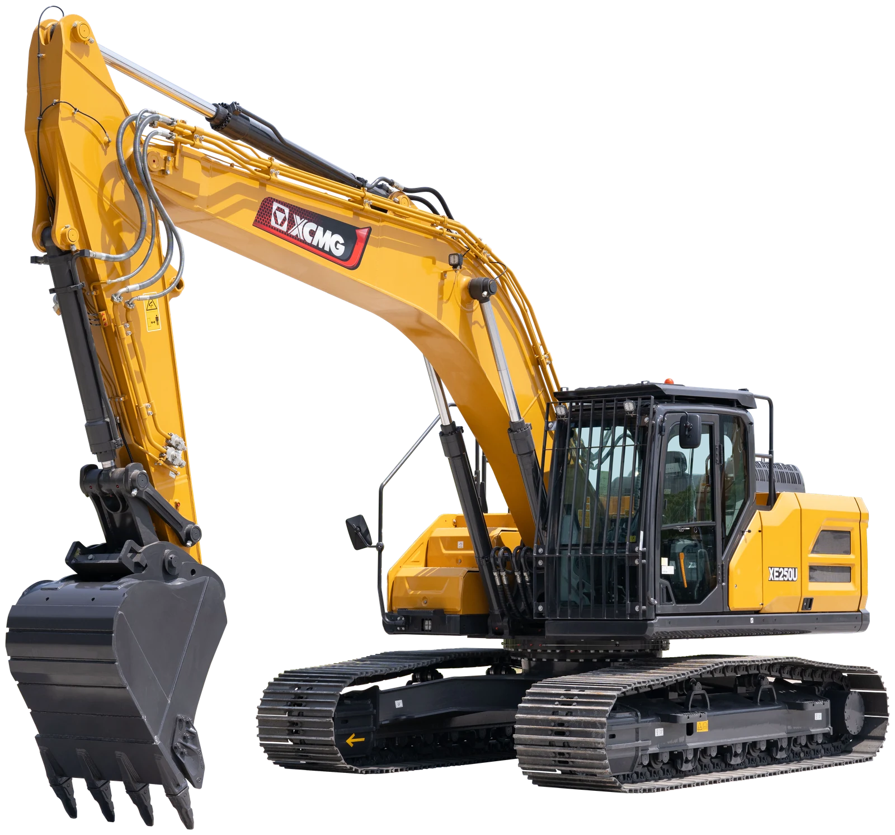

狭窄空间 / 市政庭院
工况表现：小松 PC240LC-11 95.1 分；XCMG 51.2 分，第 3，距领先产品 43.9 分。
主要差距项：整机运输长度、整机运输宽度、尾部回转半径。
配置项累计贡献：斗山 DX260LC-9 7 分；XCMG 4 分，差 3 分。
本页按照统一口径展示参数、标选配、典型工况、配置贡献、差距来源和提升模拟。全部结论可追溯至原始数据表和来源登记。

评分口径：参数综合分 65% + 标选配综合分 35%；工况评分单独展示，不重复计入总体分。
当前可核验差距集中在 液压油自动预热、液压油采样口、自动双速、单脚踏行驶。以下均为原始参数或标选配状态，不用综合分替代实际差异。
液压油自动预热：XCMG 无配置（/），卡特 326 标配（标配）。
液压油采样口：XCMG 无配置（/），卡特 326 标配（标配）。
自动双速：XCMG 无配置（/），迪尔 260P 标配（标配）。
单脚踏行驶：XCMG 无配置（/），沃尔沃 EC260 标配（标配）。
覆盖率低于 60% 的产品不进入排名，仍在右侧表格中保留并标记为“数据不足”。
对标参照：总体排名第一的参考产品为 沃尔沃 EC260；单项差距主要集中在 系统流量、行走压力、回转压力、工作压力 等具体指标。
硬参数差距：
配置差距：
| 产品 | 总体 | 参数 | 配置 | 数据覆盖 | 完整度等级 |
|---|---|---|---|---|---|
| 沃尔沃 EC260 | 52.2 | 55.2 | 46.7 | 90% | 高 |
| 斗山 DX260LC-9 | 47.7 | 52.6 | 38.6 | 90% | 中 |
| 卡特 326 | 46.4 | 44.1 | 50.6 | 89% | 中 |
| 迪尔 260P | 46.1 | 55.1 | 29.4 | 97% | 高 |
| 现代 HX260L | 43.2 | 48 | 34.3 | 92% | 高 |
| 神钢 SK260LC-11 | 41.1 | 52.5 | 19.9 | 94% | 高 |
| 小松 PC240LC-11 | 37.8 | 48.7 | 17.5 | 89% | 中 |
| XCMG XE250U | 33.1 | 37.5 | 24.9 | 87% | 中 |
| 三一 SY265C | 29.9 | 39.1 | 12.6 | 84% | 中 |
默认显示 XCMG 与工况领先产品；点击图例可增加或取消品牌，全部取消后恢复全品牌展示。
排名口径：工况字段覆盖率低于 60% 的产品不进入正式排名；缺失项仍保留在指标明细中。


图片来源：徐工官方施工案例，仅用于工况示意；本页参数、配置和排名仍以对应吨级原始数据为准。
工况表现：小松 PC240LC-11 95.1 分；XCMG 51.2 分，第 3，距领先产品 43.9 分。
主要差距项：整机运输长度、整机运输宽度、尾部回转半径。
配置项累计贡献：斗山 DX260LC-9 7 分；XCMG 4 分，差 3 分。
工况表现：迪尔 260P 75.3 分；XCMG 44.1 分，第 4，距领先产品 31.2 分。
主要差距项：最大挖掘深度、斗杆挖掘力、最大挖掘半径。
配置项累计贡献：XCMG 9.6 分，配置项累计贡献最高。
工况表现：斗山 DX260LC-9 72.5 分；XCMG 49.2 分，第 7，距领先产品 23.3 分。
主要差距项：系统流量、斗杆挖掘力、发动机净功率。
配置项累计贡献：XCMG 7 分，配置项累计贡献最高。
工况表现：XCMG 有效字段覆盖率 58%，暂不进入正式排名；当前资料领先产品为 现代 HX260L 49.1 分。
主要差距项：系统流量、工作压力、卸油管路。
配置项累计贡献：XCMG 23 分，配置项累计贡献最高。
工况表现：小松 PC240LC-11 63.9 分；XCMG 38.8 分，第 8，距领先产品 25.1 分。
主要差距项：最大牵引力、接地比压。
配置项累计贡献：配置字段覆盖不足，暂不比较。
工况表现：卡特 326 76.3 分；XCMG 33.8 分，第 8，距领先产品 42.5 分。
主要差距项：自动停机、整机运输长度、操作重量。
配置项累计贡献：卡特 326 43.4 分；XCMG 19.6 分，差 23.8 分。
工况特点：看重窄机身、短尾回转、较小运输尺寸和贴边作业能力。
有益配置：可伸缩底盘、动臂偏摆、推土铲偏摆和安全摄像头有助于庭院、市政和受限空间作业。
| 类型 | 关键项 | 权重 |
|---|---|---|
| 参数 | 整机运输宽度 | 18% |
| 参数 | 整机运输长度 | 12% |
| 参数 | 尾部回转半径 | 24% |
| 配置 | 行走报警 | 4% |
| 配置 | 报警灯 | 3% |
| 指标/配置 | 类型 | 权重 | 对工况影响 | XCMG XE250U | 卡特 326 | 迪尔 260P | 小松 PC240LC-11 | 神钢 SK260LC-11 | 沃尔沃 EC260 | 现代 HX260L | 斗山 DX260LC-9 | 三一 SY265C |
|---|---|---|---|---|---|---|---|---|---|---|---|---|
| 整机运输宽度 | 参数 | 18% | 越窄越适合入户、园林和人行道受限空间。 | 339050分贡献 14.8 · 有效数据 | 3380100分贡献 29.5 · 有效数据 | 339050分贡献 14.8 · 有效数据 | 3380100分贡献 29.5 · 有效数据 | 339050分贡献 14.8 · 有效数据 | 339050分贡献 14.8 · 有效数据 | 34000分贡献 0 · 有效数据 | 34000分贡献 0 · 有效数据 | 339050分贡献 14.8 · 有效数据 |
| 整机运输长度 | 参数 | 12% | 短车身转场和狭小现场调头更灵活。 | 1024015.4分贡献 3 · 有效数据 | 1006070.8分贡献 13.9 · 有效数据 | 1016040分贡献 7.9 · 有效数据 | 9965100分贡献 19.7 · 有效数据 | 1021024.6分贡献 4.8 · 有效数据 | 1021523.1分贡献 4.5 · 有效数据 | 1008563.1分贡献 12.4 · 有效数据 | 1008563.1分贡献 12.4 · 有效数据 | 102900分贡献 0 · 有效数据 |
| 尾部回转半径 | 参数 | 24% | 尾扫越小越不容易碰墙、碰车和碰围挡。 | 302368.3分贡献 26.9 · 有效数据 | 300087.5分贡献 34.4 · 有效数据 | 306037.5分贡献 14.8 · 有效数据 | 2985100分贡献 39.3 · 有效数据 | 31004.2分贡献 1.6 · 有效数据 | 308020.8分贡献 8.2 · 有效数据 | 307326.7分贡献 10.5 · 有效数据 | 304054.2分贡献 21.3 · 有效数据 | 31050分贡献 0 · 有效数据 |
| 行走报警 | 配置 | 4% | 人车混行环境降低安全风险。 | 标配100分贡献 6.6 · 标配 | 标配100分贡献 6.6 · 标配 | 标配100分贡献 6.6 · 标配 | 标配100分贡献 6.6 · 标配 | 标配100分贡献 6.6 · 标配 | 标配100分贡献 6.6 · 标配 | 标配100分贡献 6.6 · 标配 | 标配100分贡献 6.6 · 标配 | 标配100分贡献 6.6 · 标配 |
| 报警灯 | 配置 | 3% | 市政施工和租赁场景提高周边可感知性。 | /0分贡献 0 · 无配置 | 选配60分贡献 3 · 选配 | /0分贡献 0 · 无配置 | /0分贡献 0 · 无配置 | /0分贡献 0 · 无配置 | 选配60分贡献 3 · 选配 | 选配60分贡献 3 · 选配 | 标配驾驶室顶 四角式100分贡献 4.9 · 标配 | /0分贡献 0 · 无配置 |
同工况排名第一的参考产品为 小松 PC240LC-11；XCMG 的主要差距项为 整机运输长度、整机运输宽度、尾部回转半径。
模拟结果仅反映当前评分模型，不替代工程验证、成本评审和市场需求判断。
工况特点：核心是下挖深度、挖掘半径、斗杆挖掘力和长斗杆覆盖能力。
有益配置：长斗杆、AUX 管路和动臂斗杆防爆阀有助于深沟、管线和基础作业。
| 类型 | 关键项 | 权重 |
|---|---|---|
| 参数 | 最大挖掘深度 | 28% |
| 参数 | 最大挖掘半径 | 14% |
| 参数 | 最大地面挖掘半径 | 12% |
| 参数 | 斗杆挖掘力 | 12% |
| 参数 | 标配斗杆 | 8% |
| 参数 | 选配斗杆 | 6% |
| 配置 | 动臂斗杆防爆阀 | 6% |
| 配置 | AUX1管路 | 4% |
| 指标/配置 | 类型 | 权重 | 对工况影响 | XCMG XE250U | 卡特 326 | 迪尔 260P | 小松 PC240LC-11 | 神钢 SK260LC-11 | 沃尔沃 EC260 | 现代 HX260L | 斗山 DX260LC-9 | 三一 SY265C |
|---|---|---|---|---|---|---|---|---|---|---|---|---|
| 最大挖掘深度 | 参数 | 28% | 深度决定基础沟槽和管线施工覆盖范围。 | 695351分贡献 16.6 · 有效数据 | 682023.6分贡献 8.5 · 有效数据 | 7190100分贡献 30.4 · 有效数据 | 692044.2分贡献 13.5 · 有效数据 | 700060.7分贡献 18.5 · 有效数据 | 706073.1分贡献 22.3 · 有效数据 | 681021.5分贡献 6.5 · 有效数据 | 681021.5分贡献 6.5 · 有效数据 | 67060分贡献 0 · 有效数据 |
| 最大挖掘半径 | 参数 | 14% | 半径越大，站位不变时覆盖面越宽。 | 1026947.1分贡献 7.7 · 有效数据 | /-分贡献 - · 待核验 | 10380100分贡献 15.2 · 有效数据 | 101804.8分贡献 0.7 · 有效数据 | 1030061.9分贡献 9.4 · 有效数据 | 1034081分贡献 12.3 · 有效数据 | 101700分贡献 0 · 有效数据 | 101700分贡献 0 · 有效数据 | /-分贡献 - · 待核验 |
| 最大地面挖掘半径 | 参数 | 12% | 平面沟槽连续开挖效率更高。 | 1009143分贡献 6 · 有效数据 | 1012055.3分贡献 8.5 · 有效数据 | 1020089.4分贡献 11.7 · 有效数据 | 1002012.8分贡献 1.7 · 有效数据 | 1014063.8分贡献 8.3 · 有效数据 | 1016072.3分贡献 9.4 · 有效数据 | 99900分贡献 0 · 有效数据 | 99900分贡献 0 · 有效数据 | 10225100分贡献 16.7 · 有效数据 |
| 斗杆挖掘力 | 参数 | 12% | 深挖末端破土和清底能力。 | 1298.9分贡献 1.2 · 有效数据 | 13126.8分贡献 4.1 · 有效数据 | 13562.5分贡献 8.2 · 有效数据 | 1298.9分贡献 1.2 · 有效数据 | 13453.6分贡献 7 · 有效数据 | 1280分贡献 0 · 有效数据 | 13998.2分贡献 12.8 · 有效数据 | 139.2100分贡献 13 · 有效数据 | 13017.9分贡献 3 · 有效数据 |
| 标配斗杆 | 参数 | 8% | 斗杆长度影响标配状态下的深挖覆盖。 | 296414.7分贡献 1.4 · 有效数据 | 29500分贡献 0 · 有效数据 | 300052.6分贡献 4.6 · 有效数据 | 3045100分贡献 8.7 · 有效数据 | 298031.6分贡献 2.7 · 有效数据 | 297021.1分贡献 1.8 · 有效数据 | 300052.6分贡献 4.6 · 有效数据 | 300052.6分贡献 4.6 · 有效数据 | 29500分贡献 0 · 有效数据 |
| 选配斗杆 | 参数 | 6% | 选配斗杆说明是否可向深挖场景扩展。 | /-分贡献 - · 待核验 | 3600/7850100分贡献 7.7 · 有效数据 | 360020.6分贡献 1.3 · 有效数据 | 350016.8分贡献 1.1 · 有效数据 | 366022.8分贡献 1.5 · 有效数据 | 2500/36000分贡献 0 · 有效数据 | 350016.8分贡献 1.1 · 有效数据 | 350016.8分贡献 1.1 · 有效数据 | /-分贡献 - · 待核验 |
| 动臂斗杆防爆阀 | 配置 | 6% | 基础施工和吊装附近作业的安全配置。 | 选配60分贡献 4.2 · 选配 | /0分贡献 0 · 无配置 | /0分贡献 0 · 无配置 | 选配60分贡献 3.9 · 选配 | 选配60分贡献 3.9 · 选配 | 选配60分贡献 3.9 · 选配 | 选配60分贡献 3.9 · 选配 | 选配60分贡献 3.9 · 选配 | /0分贡献 0 · 无配置 |
| AUX1管路 | 配置 | 4% | 便于搭配夯实、破碎和清沟属具。 | 标配100分贡献 4.7 · 标配 | 选配60分贡献 3.1 · 选配 | 选配60分贡献 2.6 · 选配 | 选配60分贡献 2.6 · 选配 | 标配100分贡献 4.3 · 标配 | /0分贡献 0 · 无配置 | 标配100分贡献 4.3 · 标配 | 标配100分贡献 4.3 · 标配 | 标配100分贡献 5.6 · 标配 |
| AUX2管路 | 配置 | 2% | 旋转类属具扩展能力。 | 标配100分贡献 2.3 · 标配 | 选配60分贡献 1.5 · 选配 | 选配60分贡献 1.3 · 选配 | /0分贡献 0 · 无配置 | 选配60分贡献 1.3 · 选配 | /0分贡献 0 · 无配置 | 选配60分贡献 1.3 · 选配 | 标配100分贡献 2.2 · 标配 | 标配100分贡献 2.8 · 标配 |
同工况排名第一的参考产品为 迪尔 260P；XCMG 的主要差距项为 最大挖掘深度、斗杆挖掘力、最大挖掘半径。
配置项暂未发现明确弱项，建议继续核验竞品配置资料并维护现有标配口径。
模拟结果仅反映当前评分模型，不替代工程验证、成本评审和市场需求判断。
工况特点：看卸载高度、挖掘力、液压流量、回转和行走响应。
有益配置：经济模式、自动怠速、推土铲浮动和快换管路影响短循环油耗与辅助动作效率。
| 类型 | 关键项 | 权重 |
|---|---|---|
| 参数 | 最大卸载高度 | 18% |
| 参数 | 铲斗挖掘力 | 13% |
| 参数 | 斗杆挖掘力 | 8% |
| 参数 | 系统流量 | 14% |
| 参数 | 发动机净功率 | 10% |
| 参数 | 发动机总功率 | 8% |
| 参数 | 行走速度（高速） | 5% |
| 参数 | 行走速度（低速） | 2% |
| 指标/配置 | 类型 | 权重 | 对工况影响 | XCMG XE250U | 卡特 326 | 迪尔 260P | 小松 PC240LC-11 | 神钢 SK260LC-11 | 沃尔沃 EC260 | 现代 HX260L | 斗山 DX260LC-9 | 三一 SY265C |
|---|---|---|---|---|---|---|---|---|---|---|---|---|
| 最大卸载高度 | 参数 | 18% | 影响能否顺利装车和越过车厢。 | 712495.2分贡献 20.4 · 有效数据 | 66100分贡献 0 · 有效数据 | 7150100分贡献 19.6 · 有效数据 | 703578.7分贡献 15.4 · 有效数据 | 688050分贡献 9.8 · 有效数据 | 671018.5分贡献 3.6 · 有效数据 | 702576.9分贡献 15 · 有效数据 | 702576.9分贡献 15 · 有效数据 | 671519.4分贡献 4.3 · 有效数据 |
| 铲斗挖掘力 | 参数 | 13% | 装料、切土和短循环满斗能力。 | 183.471分贡献 11 · 有效数据 | 18061.8分贡献 8.9 · 有效数据 | 17548.4分贡献 6.8 · 有效数据 | 17240.3分贡献 5.7 · 有效数据 | 18780.6分贡献 11.4 · 有效数据 | 18164.5分贡献 9.1 · 有效数据 | 1570分贡献 0 · 有效数据 | 194.2100分贡献 14.1 · 有效数据 | 18780.6分贡献 12.8 · 有效数据 |
| 斗杆挖掘力 | 参数 | 8% | 连续挖装时保持切入力。 | 1298.9分贡献 0.9 · 有效数据 | 13126.8分贡献 2.4 · 有效数据 | 13562.5分贡献 5.4 · 有效数据 | 1298.9分贡献 0.8 · 有效数据 | 13453.6分贡献 4.7 · 有效数据 | 1280分贡献 0 · 有效数据 | 13998.2分贡献 8.5 · 有效数据 | 139.2100分贡献 8.7 · 有效数据 | 13017.9分贡献 1.7 · 有效数据 |
| 系统流量 | 参数 | 14% | 复合动作速度与液压响应。 | 2x2340分贡献 0 · 有效数据 | 2x24126.9分贡献 4.2 · 有效数据 | 2x2340分贡献 0 · 有效数据 | 47513.5分贡献 2 · 有效数据 | 2x24542.3分贡献 6.4 · 有效数据 | 2x24023.1分贡献 3.5 · 有效数据 | 2x237.513.5分贡献 2 · 有效数据 | 2x237.513.5分贡献 2 · 有效数据 | 520100分贡献 17.1 · 有效数据 |
| 发动机净功率 | 参数 | 10% | 连续循环中的动力储备。 | 14535.1分贡献 4.2 · 有效数据 | 149.848.1分贡献 5.3 · 有效数据 | 15151.4分贡献 5.6 · 有效数据 | 1320分贡献 0 · 有效数据 | 14535.1分贡献 3.8 · 有效数据 | 16794.6分贡献 10.3 · 有效数据 | 169100分贡献 10.9 · 有效数据 | 16589.2分贡献 9.7 · 有效数据 | /-分贡献 - · 待核验 |
| 发动机总功率 | 参数 | 8% | 动力系统基础能力。 | /-分贡献 - · 待核验 | 15133.3分贡献 3 · 有效数据 | 15236.7分贡献 3.2 · 有效数据 | 1410分贡献 0 · 有效数据 | 15546.7分贡献 4.1 · 有效数据 | 16890分贡献 7.8 · 有效数据 | 171100分贡献 8.7 · 有效数据 | 171100分贡献 8.7 · 有效数据 | 14513.3分贡献 1.3 · 有效数据 |
| 行走速度（高速） | 参数 | 5% | 场内短距离转场效率。 | 3.3/5.20分贡献 0 · 有效数据 | /5.666.7分贡献 3.7 · 有效数据 | 3.3/5.783.3分贡献 4.5 · 有效数据 | 3/5.550分贡献 2.7 · 有效数据 | 3.6/5.8100分贡献 5.4 · 有效数据 | 3.5/5.550分贡献 2.7 · 有效数据 | 3.3/5.8100分贡献 5.4 · 有效数据 | 3.4/5.8100分贡献 5.4 · 有效数据 | 3.5/5.550分贡献 3 · 有效数据 |
| 行走速度（低速） | 参数 | 2% | 接近卡车和料堆时的精细行走控制。 | 3.3/5.250分贡献 1.2 · 有效数据 | /5.6-分贡献 - · 待核验 | 3.3/5.750分贡献 1.1 · 有效数据 | 3/5.50分贡献 0 · 有效数据 | 3.6/5.8100分贡献 2.2 · 有效数据 | 3.5/5.583.3分贡献 1.8 · 有效数据 | 3.3/5.850分贡献 1.1 · 有效数据 | 3.4/5.866.7分贡献 1.4 · 有效数据 | 3.5/5.583.3分贡献 2 · 有效数据 |
| 回转速度 | 参数 | 7% | 短循环挖装回转效率。 | 10.638.9分贡献 3.2 · 有效数据 | 9.90分贡献 0 · 有效数据 | 10.955.6分贡献 4.2 · 有效数据 | 11.7100分贡献 7.6 · 有效数据 | 11.483.3分贡献 6.3 · 有效数据 | 11.7100分贡献 7.6 · 有效数据 | 10.427.8分贡献 2.1 · 有效数据 | 10.638.9分贡献 3 · 有效数据 | 10.638.9分贡献 3.3 · 有效数据 |
| 自动怠速 | 配置 | 4% | 等待装车和短暂停顿时降低怠速油耗。 | 标配100分贡献 4.8 · 标配 | 标配100分贡献 4.4 · 标配 | 标配100分贡献 4.3 · 标配 | 标配100分贡献 4.3 · 标配 | 标配100分贡献 4.3 · 标配 | 标配100分贡献 4.3 · 标配 | 标配100分贡献 4.3 · 标配 | 标配100分贡献 4.3 · 标配 | 标配100分贡献 4.9 · 标配 |
| 快换管路 | 配置 | 3% | 多属具切换减少停机时间。 | 标配100分贡献 3.6 · 标配 | 选配60分贡献 2 · 选配 | /0分贡献 0 · 无配置 | /0分贡献 0 · 无配置 | /0分贡献 0 · 无配置 | /0分贡献 0 · 无配置 | 标配100分贡献 3.3 · 标配 | /0分贡献 0 · 无配置 | 标配100分贡献 3.7 · 标配 |
同工况排名第一的参考产品为 斗山 DX260LC-9；XCMG 的主要差距项为 系统流量、斗杆挖掘力、发动机净功率。
配置项暂未发现明确弱项，建议继续核验竞品配置资料并维护现有标配口径。
模拟结果仅反映当前评分模型，不替代工程验证、成本评审和市场需求判断。
工况特点：重点是液压系统流量、压力和 AUX 管路覆盖。
有益配置：AUX1/AUX2 管路、卸油管路、流量保持和快换管路影响破碎锤、拇指夹、螺旋钻等属具适配。
| 类型 | 关键项 | 权重 |
|---|---|---|
| 参数 | 系统流量 | 14% |
| 参数 | 工作压力 | 12% |
| 参数 | AUX1流量 | 14% |
| 参数 | AUX1压力 | 10% |
| 参数 | AUX2流量 | 8% |
| 参数 | AUX2压力 | 8% |
| 配置 | AUX1管路 | 10% |
| 配置 | AUX2管路 | 8% |
| 指标/配置 | 类型 | 权重 | 对工况影响 | XCMG XE250U | 卡特 326 | 迪尔 260P | 小松 PC240LC-11 | 神钢 SK260LC-11 | 沃尔沃 EC260 | 现代 HX260L | 斗山 DX260LC-9 | 三一 SY265C |
|---|---|---|---|---|---|---|---|---|---|---|---|---|
| 系统流量 | 参数 | 14% | 决定液压属具连续工作的供油基础。 | 2x2340分贡献 0 · 有效数据 | 2x24126.9分贡献 6.9 · 有效数据 | 2x2340分贡献 0 · 有效数据 | 47513.5分贡献 3.4 · 有效数据 | 2x24542.3分贡献 7.7 · 有效数据 | 2x24023.1分贡献 5.9 · 有效数据 | 2x237.513.5分贡献 2 · 有效数据 | 2x237.513.5分贡献 3.4 · 有效数据 | 520100分贡献 25.5 · 有效数据 |
| 工作压力 | 参数 | 12% | 破碎、夹持和钻孔属具输出能力。 | 34.325分贡献 5.5 · 有效数据 | 3542.5分贡献 9.3 · 有效数据 | 34.325分贡献 3.2 · 有效数据 | 37.3100分贡献 21.8 · 有效数据 | 34.325分贡献 3.9 · 有效数据 | 33.30分贡献 0 · 有效数据 | 34.325分贡献 3.2 · 有效数据 | 34.325分贡献 5.5 · 有效数据 | 34.325分贡献 5.5 · 有效数据 |
| AUX1流量 | 参数 | 14% | 主属具回路供油能力。 | /-分贡献 - · 待核验 | /-分贡献 - · 待核验 | 30-46894.8分贡献 14 · 有效数据 | /-分贡献 - · 待核验 | 2x2460分贡献 0 · 有效数据 | /-分贡献 - · 待核验 | 50-475100分贡献 14.7 · 有效数据 | /-分贡献 - · 待核验 | /-分贡献 - · 待核验 |
| AUX1压力 | 参数 | 10% | 主属具负载能力。 | /-分贡献 - · 待核验 | /-分贡献 - · 待核验 | 60-35100分贡献 10.5 · 有效数据 | /-分贡献 - · 待核验 | /-分贡献 - · 待核验 | /-分贡献 - · 待核验 | 14-340分贡献 0 · 有效数据 | /-分贡献 - · 待核验 | /-分贡献 - · 待核验 |
| AUX2流量 | 参数 | 8% | 旋转/夹持类辅回路能力。 | /-分贡献 - · 待核验 | /-分贡献 - · 待核验 | 310分贡献 0 · 有效数据 | /-分贡献 - · 待核验 | 42.641.6分贡献 4.3 · 有效数据 | /-分贡献 - · 待核验 | 58.9100分贡献 8.4 · 有效数据 | /-分贡献 - · 待核验 | /-分贡献 - · 待核验 |
| AUX2压力 | 参数 | 8% | 决定辅回路可匹配属具的压力范围。 | /-分贡献 - · 待核验 | /-分贡献 - · 待核验 | 21-25100分贡献 8.4 · 有效数据 | /-分贡献 - · 待核验 | /-分贡献 - · 待核验 | /-分贡献 - · 待核验 | 160分贡献 0 · 有效数据 | /-分贡献 - · 待核验 | /-分贡献 - · 待核验 |
| AUX1管路 | 配置 | 10% | 破碎锤和常规属具基础配置。 | 标配100分贡献 18.2 · 标配 | 选配60分贡献 10.9 · 选配 | 选配60分贡献 6.3 · 选配 | 选配60分贡献 10.9 · 选配 | 标配100分贡献 13 · 标配 | /0分贡献 0 · 无配置 | 标配100分贡献 10.5 · 标配 | 标配100分贡献 18.2 · 标配 | 标配100分贡献 18.2 · 标配 |
| AUX2管路 | 配置 | 8% | 旋转夹、拇指夹等复合属具更友好。 | 标配100分贡献 14.5 · 标配 | 选配60分贡献 8.7 · 选配 | 选配60分贡献 5.1 · 选配 | /0分贡献 0 · 无配置 | 选配60分贡献 6.2 · 选配 | /0分贡献 0 · 无配置 | 选配60分贡献 5.1 · 选配 | 标配100分贡献 14.5 · 标配 | 标配100分贡献 14.5 · 标配 |
| 卸油管路 | 配置 | 6% | 破碎锤回油保护和热管理。 | /0分贡献 0 · 无配置 | /0分贡献 0 · 无配置 | /0分贡献 0 · 无配置 | /0分贡献 0 · 无配置 | /0分贡献 0 · 无配置 | 选配60分贡献 6.5 · 选配 | /0分贡献 0 · 无配置 | /0分贡献 0 · 无配置 | /0分贡献 0 · 无配置 |
| 快换管路 | 配置 | 5% | 多属具场景减少切换时间。 | 标配100分贡献 9.1 · 标配 | 选配60分贡献 5.5 · 选配 | /0分贡献 0 · 无配置 | /0分贡献 0 · 无配置 | /0分贡献 0 · 无配置 | /0分贡献 0 · 无配置 | 标配100分贡献 5.3 · 标配 | /0分贡献 0 · 无配置 | 标配100分贡献 9.1 · 标配 |
XCMG 有效字段覆盖率为 58%，暂不进入正式排名；当前资料中领先产品为 现代 HX260L，已知差距项为 系统流量、工作压力、卸油管路。
XCMG 有效字段覆盖率为 58%，低于正式排名门槛，暂不生成模拟排名。请先补齐该工况缺失参数或配置，再开展提升方案评估。
工况特点：关注接地比压、履带宽度、牵引、爬坡和起吊能力。
有益配置：副配重和推土铲浮动有助于改善稳定性与整平效率；起吊边界仍应以载荷表和作业规范为准。
| 类型 | 关键项 | 权重 |
|---|---|---|
| 参数 | 履带宽度 | 9% |
| 参数 | 接地比压 | 14% |
| 参数 | 最大牵引力 | 13% |
| 指标/配置 | 类型 | 权重 | 对工况影响 | XCMG XE250U | 卡特 326 | 迪尔 260P | 小松 PC240LC-11 | 神钢 SK260LC-11 | 沃尔沃 EC260 | 现代 HX260L | 斗山 DX260LC-9 | 三一 SY265C |
|---|---|---|---|---|---|---|---|---|---|---|---|---|
| 履带宽度 | 参数 | 9% | 较宽履带通常有助于降低接地比压并改善稳定性，但会增加运输宽度。 | 800100分贡献 25 · 有效数据 | 7900分贡献 0 · 有效数据 | 800100分贡献 25 · 有效数据 | 800100分贡献 25 · 有效数据 | 800100分贡献 25 · 有效数据 | 800100分贡献 25 · 有效数据 | 800100分贡献 25 · 有效数据 | 800100分贡献 25 · 有效数据 | 800100分贡献 25 · 有效数据 |
| 接地比压 | 参数 | 14% | 越低越适合软土、草地和回填土表面。 | 40.623.5分贡献 9.2 · 有效数据 | 4041.2分贡献 16 · 有效数据 | 40.623.5分贡献 9.2 · 有效数据 | 38100分贡献 38.9 · 有效数据 | 4041.2分贡献 16 · 有效数据 | 39.555.9分贡献 21.7 · 有效数据 | 41.25.9分贡献 2.3 · 有效数据 | 41.40分贡献 0 · 有效数据 | 39.361.8分贡献 24 · 有效数据 |
| 最大牵引力 | 参数 | 13% | 坡地转场和湿软场地脱困能力。 | 22012.9分贡献 4.6 · 有效数据 | 22818.6分贡献 6.7 · 有效数据 | 22315分贡献 5.4 · 有效数据 | 2020分贡献 0 · 有效数据 | 24329.3分贡献 10.6 · 有效数据 | 21710.7分贡献 3.9 · 有效数据 | 342100分贡献 36.1 · 有效数据 | 282.757.6分贡献 20.8 · 有效数据 | 22717.9分贡献 6.4 · 有效数据 |
同工况排名第一的参考产品为 小松 PC240LC-11；XCMG 的主要差距项为 最大牵引力、接地比压。
配置项暂未发现明确弱项，建议继续核验竞品配置资料并维护现有标配口径。
模拟结果仅反映当前评分模型，不替代工程验证、成本评审和市场需求判断。
工况特点：看运输尺寸、油耗管理、易用性、安全提醒和远程管理。
有益配置：自动怠速、自动停机、远程信息处理、防盗、摄像头和报警配置会影响油耗管理、资产管理和多客户使用便利性。
| 类型 | 关键项 | 权重 |
|---|---|---|
| 参数 | 整机运输宽度 | 10% |
| 参数 | 整机运输长度 | 8% |
| 参数 | 整机运输高度 | 7% |
| 参数 | 操作重量 | 8% |
| 参数 | 行走速度（高速） | 5% |
| 参数 | 行走速度（低速） | 2% |
| 配置 | 自动怠速 | 6% |
| 配置 | 自动停机 | 8% |
| 指标/配置 | 类型 | 权重 | 对工况影响 | XCMG XE250U | 卡特 326 | 迪尔 260P | 小松 PC240LC-11 | 神钢 SK260LC-11 | 沃尔沃 EC260 | 现代 HX260L | 斗山 DX260LC-9 | 三一 SY265C |
|---|---|---|---|---|---|---|---|---|---|---|---|---|
| 整机运输宽度 | 参数 | 10% | 拖车、仓库和门洞通过性。 | 339050分贡献 5.5 · 有效数据 | 3380100分贡献 11.2 · 有效数据 | 339050分贡献 5.5 · 有效数据 | 3380100分贡献 11 · 有效数据 | 339050分贡献 5.5 · 有效数据 | 339050分贡献 5.5 · 有效数据 | 34000分贡献 0 · 有效数据 | 34000分贡献 0 · 有效数据 | 339050分贡献 5.5 · 有效数据 |
| 整机运输长度 | 参数 | 8% | 拖车装载和仓储占地。 | 1024015.4分贡献 1.4 · 有效数据 | 1006070.8分贡献 6.4 · 有效数据 | 1016040分贡献 3.5 · 有效数据 | 9965100分贡献 8.8 · 有效数据 | 1021024.6分贡献 2.2 · 有效数据 | 1021523.1分贡献 2 · 有效数据 | 1008563.1分贡献 5.5 · 有效数据 | 1008563.1分贡献 5.5 · 有效数据 | 102900分贡献 0 · 有效数据 |
| 整机运输高度 | 参数 | 7% | 低矮通道和运输合规性。 | 321026.7分贡献 2.1 · 有效数据 | 32500分贡献 0 · 有效数据 | 3100100分贡献 7.7 · 有效数据 | 318543.3分贡献 3.3 · 有效数据 | 318046.7分贡献 3.6 · 有效数据 | 311093.3分贡献 7.2 · 有效数据 | 323510分贡献 0.8 · 有效数据 | 323510分贡献 0.8 · 有效数据 | 319536.7分贡献 2.8 · 有效数据 |
| 操作重量 | 参数 | 8% | 拖车级别和租赁客户自提门槛。 | 2730025.5分贡献 2.2 · 有效数据 | 2630068.7分贡献 6.2 · 有效数据 | 2725027.6分贡献 2.4 · 有效数据 | 25574100分贡献 8.8 · 有效数据 | 2730025.5分贡献 2.2 · 有效数据 | 278900分贡献 0 · 有效数据 | 277804.7分贡献 0.4 · 有效数据 | 2740021.2分贡献 1.9 · 有效数据 | 2700038.4分贡献 3.4 · 有效数据 |
| 行走速度（高速） | 参数 | 5% | 场内快速转场效率。 | 3.3/5.20分贡献 0 · 有效数据 | /5.666.7分贡献 3.7 · 有效数据 | 3.3/5.783.3分贡献 4.6 · 有效数据 | 3/5.550分贡献 2.7 · 有效数据 | 3.6/5.8100分贡献 5.5 · 有效数据 | 3.5/5.550分贡献 2.7 · 有效数据 | 3.3/5.8100分贡献 5.5 · 有效数据 | 3.4/5.8100分贡献 5.5 · 有效数据 | 3.5/5.550分贡献 2.7 · 有效数据 |
| 行走速度（低速） | 参数 | 2% | 多客户使用时的低速操控友好性。 | 3.3/5.250分贡献 1.1 · 有效数据 | /5.6-分贡献 - · 待核验 | 3.3/5.750分贡献 1.1 · 有效数据 | 3/5.50分贡献 0 · 有效数据 | 3.6/5.8100分贡献 2.2 · 有效数据 | 3.5/5.583.3分贡献 1.8 · 有效数据 | 3.3/5.850分贡献 1.1 · 有效数据 | 3.4/5.866.7分贡献 1.5 · 有效数据 | 3.5/5.583.3分贡献 1.8 · 有效数据 |
| 自动怠速 | 配置 | 6% | 减少等待和停顿阶段的怠速油耗。 | 标配100分贡献 6.6 · 标配 | 标配100分贡献 6.7 · 标配 | 标配100分贡献 6.6 · 标配 | 标配100分贡献 6.6 · 标配 | 标配100分贡献 6.6 · 标配 | 标配100分贡献 6.6 · 标配 | 标配100分贡献 6.6 · 标配 | 标配100分贡献 6.6 · 标配 | 标配100分贡献 6.6 · 标配 |
| 自动停机 | 配置 | 8% | 降低无效怠速、油耗和租赁客户使用成本。 | /0分贡献 0 · 无配置 | 标配100分贡献 9 · 标配 | 标配100分贡献 8.8 · 标配 | 标配100分贡献 8.8 · 标配 | 标配100分贡献 8.8 · 标配 | 选配60分贡献 5.3 · 选配 | 标配100分贡献 8.8 · 标配 | 标配100分贡献 8.8 · 标配 | /0分贡献 0 · 无配置 |
| 远程信息处理系统 | 配置 | 9% | 定位、工时、维保和资产管理。 | 选配60分贡献 5.9 · 选配 | 标配Vision Link100分贡献 10.1 · 标配 | JD Link40分贡献 4 · 需确认 | Komtrax40分贡献 4 · 需确认 | KOMEXS40分贡献 4 · 需确认 | /0分贡献 0 · 无配置 | Hyundai Connect40分贡献 4 · 需确认 | /0分贡献 0 · 无配置 | /0分贡献 0 · 无配置 |
| 密码启动/防盗 | 配置 | 5% | 租赁资产防盗和授权使用。 | /0分贡献 0 · 无配置 | 选配60分贡献 3.4 · 选配 | /0分贡献 0 · 无配置 | /0分贡献 0 · 无配置 | /0分贡献 0 · 无配置 | 标配100分贡献 5.5 · 标配 | /0分贡献 0 · 无配置 | /0分贡献 0 · 无配置 | /0分贡献 0 · 无配置 |
| 一键启动 | 配置 | 3% | 多客户使用更方便。 | /0分贡献 0 · 无配置 | 标配100分贡献 3.4 · 标配 | /0分贡献 0 · 无配置 | /0分贡献 0 · 无配置 | /0分贡献 0 · 无配置 | 标配100分贡献 3.3 · 标配 | /0分贡献 0 · 无配置 | /0分贡献 0 · 无配置 | /0分贡献 0 · 无配置 |
| USB电源 | 配置 | 2% | 基础便利配置。 | 标配100分贡献 2.2 · 标配 | /0分贡献 0 · 无配置 | 标配100分贡献 2.2 · 标配 | /0分贡献 0 · 无配置 | /0分贡献 0 · 无配置 | /0分贡献 0 · 无配置 | /0分贡献 0 · 无配置 | /0分贡献 0 · 无配置 | 标配100分贡献 2.2 · 标配 |
| 蓝牙收音机 | 配置 | 2% | 驾驶舒适性。 | 选配60分贡献 1.3 · 选配 | 标配100分贡献 2.2 · 标配 | /0分贡献 0 · 无配置 | /0分贡献 0 · 无配置 | 标配100分贡献 2.2 · 标配 | 选配60分贡献 1.3 · 选配 | 标配100分贡献 2.2 · 标配 | 标配100分贡献 2.2 · 标配 | 标配100分贡献 2.2 · 标配 |
| 手机托 | 配置 | 2% | 租赁客户通用便利性。 | /0分贡献 0 · 无配置 | /0分贡献 0 · 无配置 | /0分贡献 0 · 无配置 | /0分贡献 0 · 无配置 | /0分贡献 0 · 无配置 | /0分贡献 0 · 无配置 | /0分贡献 0 · 无配置 | /0分贡献 0 · 无配置 | /0分贡献 0 · 无配置 |
| 报警灯 | 配置 | 4% | 提高设备在市政和工地环境中的可见性。 | /0分贡献 0 · 无配置 | 选配60分贡献 2.7 · 选配 | /0分贡献 0 · 无配置 | /0分贡献 0 · 无配置 | /0分贡献 0 · 无配置 | 选配60分贡献 2.6 · 选配 | 选配60分贡献 2.6 · 选配 | 标配驾驶室顶 四角式100分贡献 4.4 · 标配 | /0分贡献 0 · 无配置 |
| 行走报警 | 配置 | 5% | 人员密集场景安全提醒。 | 标配100分贡献 5.5 · 标配 | 标配100分贡献 5.6 · 标配 | 标配100分贡献 5.5 · 标配 | 标配100分贡献 5.5 · 标配 | 标配100分贡献 5.5 · 标配 | 标配100分贡献 5.5 · 标配 | 标配100分贡献 5.5 · 标配 | 标配100分贡献 5.5 · 标配 | 标配100分贡献 5.5 · 标配 |
| 电子围栏 | 配置 | 3% | 租赁资产区域管理。 | /0分贡献 0 · 无配置 | 标配100分贡献 3.4 · 标配 | /0分贡献 0 · 无配置 | /0分贡献 0 · 无配置 | /0分贡献 0 · 无配置 | 标配100分贡献 3.3 · 标配 | 选配60分贡献 2 · 选配 | 标配100分贡献 3.3 · 标配 | /0分贡献 0 · 无配置 |
| 工作灯延迟关闭 | 配置 | 2% | 夜间停机和离场便利性。 | /0分贡献 0 · 无配置 | 标配100分贡献 2.2 · 标配 | /0分贡献 0 · 无配置 | /0分贡献 0 · 无配置 | /0分贡献 0 · 无配置 | /0分贡献 0 · 无配置 | /0分贡献 0 · 无配置 | /0分贡献 0 · 无配置 | /0分贡献 0 · 无配置 |
同工况排名第一的参考产品为 卡特 326；XCMG 的主要差距项为 自动停机、整机运输长度、操作重量。
模拟结果仅反映当前评分模型，不替代工程验证、成本评审和市场需求判断。
| 类别 | 指标 | 单位 | XCMG XE250U | 卡特 326 | 迪尔 260P | 小松 PC240LC-11 | 神钢 SK260LC-11 | 沃尔沃 EC260 | 现代 HX260L | 斗山 DX260LC-9 | 三一 SY265C |
|---|---|---|---|---|---|---|---|---|---|---|---|
| 运输参数 | 操作重量 | kg | 27300 | 26300 | 27250 | 25574 | 27300 | 27890 | 27780 | 27400 | 27000 |
| 运输参数 | 整机运输宽度 | mm | 3390 | 3380 | 3390 | 3380 | 3390 | 3390 | 3400 | 3400 | 3390 |
| 运输参数 | 整机运输高度 | mm | 3210 | 3250 | 3100 | 3185 | 3180 | 3110 | 3235 | 3235 | 3195 |
| 运输参数 | 整机运输长度 | mm | 10240 | 10060 | 10160 | 9965 | 10210 | 10215 | 10085 | 10085 | 10290 |
| 接地参数 | 轨距 | mm | 2590 | 2590 | 2590 | 2580 | 2590 | 2590 | 2600 | 2600 | 2590 |
| 接地参数 | 轴距 | mm | 3841 | 3830 | 3840 | 3845 | 3850 | 3850 | 3835 | 3835 | 3830 |
| 接地参数 | 履带长度 | mm | 4633 | 4640 | 4630 | 4640 | 4640 | 4650 | 4628 | 4630 | 4636 |
| 接地参数 | 履带宽度 | mm | 800 | 790 | 800 | 800 | 800 | 800 | 800 | 800 | 800 |
| 工作参数 | 最大挖掘高度 | mm | 10074 | 9680 | 10030 | 10000 | 9790 | 9685 | 9770 | 9770 | 9740 |
| 工作参数 | 最大卸载高度 | mm | 7124 | 6610 | 7150 | 7035 | 6880 | 6710 | 7025 | 7025 | 6715 |
| 工作参数 | 最大挖掘深度 | mm | 6953 | 6820 | 7190 | 6920 | 7000 | 7060 | 6810 | 6810 | 6706 |
| 工作参数 | 最大挖掘半径 | mm | 10269 | / | 10380 | 10180 | 10300 | 10340 | 10170 | 10170 | / |
| 工作参数 | 最大地面挖掘半径 | mm | 10091 | 10120 | 10200 | 10020 | 10140 | 10160 | 9990 | 9990 | 10225 |
| 工作参数 | 尾部回转半径 | mm | 3023 | 3000 | 3060 | 2985 | 3100 | 3080 | 3073 | 3040 | 3105 |
| 动力 | 发动机总功率 | kW | / | 151 | 152 | 141 | 155 | 168 | 171 | 171 | 145 |
| 动力 | 发动机净功率 | kW | 145 | 149.8 | 151 | 132 | 145 | 167 | 169 | 165 | / |
| 工作装置 | 标配斗杆 | mm | 2964 | 2950 | 3000 | 3045 | 2980 | 2970 | 3000 | 3000 | 2950 |
| 工作装置 | 标配动臂 | mm | 6000 | 5900 | 5900 | 5850 | 6020 | 6000 | - | 5900 | 5900 |
| 工作装置 | 选配斗杆 | mm | / | 3600/7850 | 3600 | 3500 | 3660 | 2500/3600 | 3500 | 3500 | / |
| 工作装置 | 选配动臂 | mm | / | 10200 | / | / | / | / | / | / | / |
| 液压系统 | 液压系统 | 类别 | 负流量 | 全电控 | 全电控 | 负载敏感 | - | 全电控 | - | 全电控 | 正流量 |
| 液压系统 | 系统流量 | L/min | 2x234 | 2x241 | 2x234 | 475 | 2x245 | 2x240 | 2x237.5 | 2x237.5 | 520 |
| 液压系统 | 工作压力 | MPa | 34.3 | 35 | 34.3 | 37.3 | 34.3 | 33.3 | 34.3 | 34.3 | 34.3 |
| 液压系统 | 行走压力 | MPa | 34.3 | 35 | 34.3 | 37.3 | 34.3 | 36.3 | / | 34.3 | 34.3 |
| 液压系统 | 回转压力 | MPa | 25 | 28.4 | 28.5 | 28.9 | 28.4 | 27.9 | / | 28 | 27.5 |
| 液压系统 | 增压压力 | MPa | 37 | 38 | 37.3 | - | 37.8 | 36.3 | 37.3 | 37.3 | 37.3 |
| 液压系统 | AUX1流量 | L/min | / | / | 30-468 | / | 2x246 | / | 50-475 | / | / |
| 液压系统 | AUX1压力 | MPa | / | / | 60-35 | / | / | / | 14-34 | / | / |
| 液压系统 | AUX2流量 | L/min | / | / | 31 | / | 42.6 | / | 58.9 | / | / |
| 液压系统 | AUX2压力 | MPa | / | / | 21-25 | / | / | / | 16 | / | / |
| 行走 | 行走速度（低速/高速） | km/h | 3.3/5.2 | /5.6 | 3.3/5.7 | 3/5.5 | 3.6/5.8 | 3.5/5.5 | 3.3/5.8 | 3.4/5.8 | 3.5/5.5 |
| 行走 | 最大牵引力 | kN | 220 | 228 | 223 | 202 | 243 | 217 | 342 | 282.7 | 227 |
| 行走 | 接地比压 | kPa | 40.6 | 40 | 40.6 | 38 | 40 | 39.5 | 41.2 | 41.4 | 39.3 |
| 回转 | 回转速度 | rpm | 10.6 | 9.9 | 10.9 | 11.7 | 11.4 | 11.7 | 10.4 | 10.6 | 10.6 |
| 回转 | 回转力矩 | kN | 74 | 106 | 80 | 79 | 85.9 | 91.7 | 80 | 100.8 | / |
| 挖掘力 | 铲斗挖掘力 | kN | 183.4 | 180 | 175 | 172 | 187 | 181 | 157 | 194.2 | 187 |
| 挖掘力 | 斗杆挖掘力 | kN | 129 | 131 | 135 | 129 | 134 | 128 | 139 | 139.2 | 130 |
| 起吊能力 | 地面正前方6m远处起吊能力 | kg | 8591 | 9550 | 9310 | 9350 | 9560 | 10060 | 10220 | 10210 | 9541 |
| 起吊能力 | 地面侧方6m远处起吊能力 | kg | 6013 | 6150 | 6200 | 6200 | 6260 | 6480 | 6670 | 6660 | 6859 |
| 类别 | 配置 | 单位 | XCMG XE250U | 卡特 326 | 迪尔 260P | 小松 PC240LC-11 | 神钢 SK260LC-11 | 沃尔沃 EC260 | 现代 HX260L | 斗山 DX260LC-9 | 三一 SY265C |
|---|---|---|---|---|---|---|---|---|---|---|---|
| 发动机 | 自动怠速 | 配置 | 标配 | 标配 | 标配 | 标配 | 标配 | 标配 | 标配 | 标配 | 标配 |
| 发动机 | 自动停机 | 配置 | / | 标配 | 标配 | 标配 | 标配 | 选配 | 标配 | 标配 | / |
| 发动机 | 机油采样口 | 配置 | / | / | 标配 | / | / | 标配 | / | / | / |
| 发动机 | 燃油泵 | 配置 | 选配 | / | / | / | / | 选配 | 选配 | / | / |
| 发动机 | 冷启动 | 配置 | / | -18℃ -32℃ | 选配缸体加热器 | / | / | 选配缸体加热器 | 选配缸体加热器 | / | / |
| 发动机 | 电风扇 | 配置 | / | 标配 | 选配 | / | / | / | / | / | / |
| 发动机 | 风扇反向 | 配置 | / | 标配 | 选配 | / | / | 选配 | 选配 | / | / |
| 发动机 | 功率模式 | 配置 | 标配 | Power/ Smart/Eco | 标配 | P/E | H/S/Eco | / | / | P+/P/S/E | 标配 |
| 液压系统 | 液压油自动预热 | 配置 | / | 标配 | / | / | 标配 | 标配 | / | / | / |
| 液压系统 | 液压油采样口 | 配置 | / | 标配 | 标配 | / | / | / | / | / | / |
| 液压系统 | 自动双速 | 配置 | / | / | 标配 | 标配 | / | / | / | / | / |
| 液压系统 | 手柄行走 | 配置 | / | 选配 | / | / | / | / | / | / | / |
| 液压系统 | 单脚踏行驶 | 配置 | / | / | 选配 | 选配 | 选配 | 标配 | 标配 | 标配 | / |
| 液压系统 | 蠕行模式 | 配置 | / | / | / | / | / | 标配 | / | / | / |
| 液压系统 | 动臂斗杆防爆阀 | 配置 | 选配 | / | / | 选配 | 选配 | 选配 | 选配 | 选配 | / |
| 液压系统 | 动臂斗杆缓冲阀 | 配置 | / | 标配 | / | / | / | / | / | / | / |
| 液压系统 | 动臂浮动 | 配置 | / | / | / | / | / | 标配 | / | 标配 | / |
| 液压系统 | 动作优先 | 配置 | / | / | / | / | / | 标配 | / | / | / |
| 液压系统 | 精准回转 | 配置 | / | / | / | / | / | / | 标配 | / | / |
| 液压系统 | AUX1管路 | 配置 | 标配 | 选配 | 选配 | 选配 | 标配 | / | 标配 | 标配 | 标配 |
| 液压系统 | 破碎锤回油过滤 | 配置 | / | / | / | / | / | / | / | / | / |
| 液压系统 | 破碎锤自动停止 | 配置 | / | 标配 | / | / | / | / | / | / | / |
| 液压系统 | AUX2管路 | 配置 | 标配 | 选配 | 选配 | / | 选配 | / | 选配 | 标配 | 标配 |
| 液压系统 | 卸油管路 | 配置 | / | / | / | / | / | 选配 | / | / | / |
| 液压系统 | 快换管路 | 配置 | 标配 | 选配 | / | / | / | / | 标配 | / | 标配 |
| 驾驶环境 | 一键启动 | 配置 | / | 标配 | / | / | / | 标配 | / | / | / |
| 驾驶环境 | 密码防盗 | 配置 | / | 选配 | / | / | / | 标配 | / | / | / |
| 驾驶环境 | USB电源 | 配置 | 标配 | / | 标配 | / | / | / | / | / | 标配 |
| 驾驶环境 | 无线充电 | 配置 | / | / | / | / | / | 标配 | / | 标配 | / |
| 驾驶环境 | 蓝牙收音机 | 配置 | 选配 | 标配 | / | / | 标配 | 选配 | 标配 | 标配 | 标配 |
| 驾驶环境 | 后视镜加热 | 配置 | / | / | / | / | / | / | / | / | / |
| 驾驶环境 | 手机托 | 配置 | / | / | / | / | / | / | / | / | / |
| 驾驶环境 | 遮阳 | 配置 | 标配 | 标配 | / | 选配 | / | 标配 | / | 标配 | / |
| 驾驶环境 | 遮雨棚 | 配置 | 标配 | 选配 | / | 选配 | / | 选配 | 选配 | 选配 | / |
| 电器系统 | 工作灯延迟关闭 | 配置 | / | 标配 | / | / | / | / | / | / | / |
| 电器系统 | 报警灯 | 配置 | / | 选配 | / | / | / | 选配 | 选配 | 标配驾驶室顶 四角式 | / |
| 电器系统 | 行走报警 | 配置 | 标配 | 标配 | 标配 | 标配 | 标配 | 标配 | 标配 | 标配 | 标配 |
| 电器系统 | 回转报警 | 配置 | / | 选配 | / | / | / | / | 标配 | 标配 | / |
| 电器系统 | 360°/270°视摄像头 | 配置 | / | 选配360 | 选配360 | / | 标配270 | 标配 | 选配360° | 选配360° | / |
| 电器系统 | 远程信息处理系统 | 配置 | 选配 | 标配Vision Link | JD Link | Komtrax | KOMEXS | / | Hyundai Connect | / | / |
| 电器系统 | 车辆健康诊断系统 | 配置 | / | / | / | / | / | / | 标配 | 标配 | / |
| 电器系统 | 智能称重 | 配置 | / | 标配 | / | / | / | 选配 | 选配 | 标配 | / |
| 电器系统 | 辅助动作 | 配置 | / | 标配 动臂 铲斗 Swing 平地 起吊助手 | / | / | / | 选配 | 选配 起吊助手 2D控制 | 起吊 平地 修坡 | / |
| 电器系统 | 电子栅栏 | 配置 | / | 标配 | / | / | / | 标配 | 选配 | 标配 | / |
| 电器系统 | 远程操控 | 配置 | / | 选配 | / | / | / | / | / | - | / |
| 电器系统 | 障碍物检测 | 配置 | / | 选配 | 选配 | / | / | 标配 | / | 选配 | / |
| 电器系统 | 坡度系统 | 配置 | / | 标配2D 选配3D | 标配2D 选配3D | / | / | 选配2D/3D | 选配 2D | 标配2D+激光捕捉 | / |
| 工装底盘 | 二节臂 m | 配置 | / | 2.8+3.3 | / | / | / | 5.95 | / | / | / |
| 工装底盘 | 长斗杆 m | 配置 | / | 3.6 | 3.6 | 3.5 | 3.66 | 3.6 | 3.5 | 3.5 | / |
| 工装底盘 | 超长工装 m | 配置 | / | 10.2+7.85 | / | / | / | 10.2+7.85 | / | / | / |
| 工装底盘 | 自动润滑 | 配置 | 选配 | / | 选配 | / | / | 选配 | / | / | / |
| 工装底盘 | 配重 kg | 配置 | 5416 | 标配4600 选配7400 | 5500 | 4670/5500 | 5580 | 4950/6200 | 5500 | 5500 | / |
| 工装底盘 | 铲斗 m³ | 配置 | 1.2 | GP: 0.63-1.83 HD: 0.52-1.97 SD: 0.52-1.33 ditch cleaning: 0.57/0.74 | HD 0.85-1.6 | 0.58-1.41 | 0.80-1 | GP/HD 0.56-1.76 | 标配 1.4 选配 1.2 | 标配 1.17 | / |